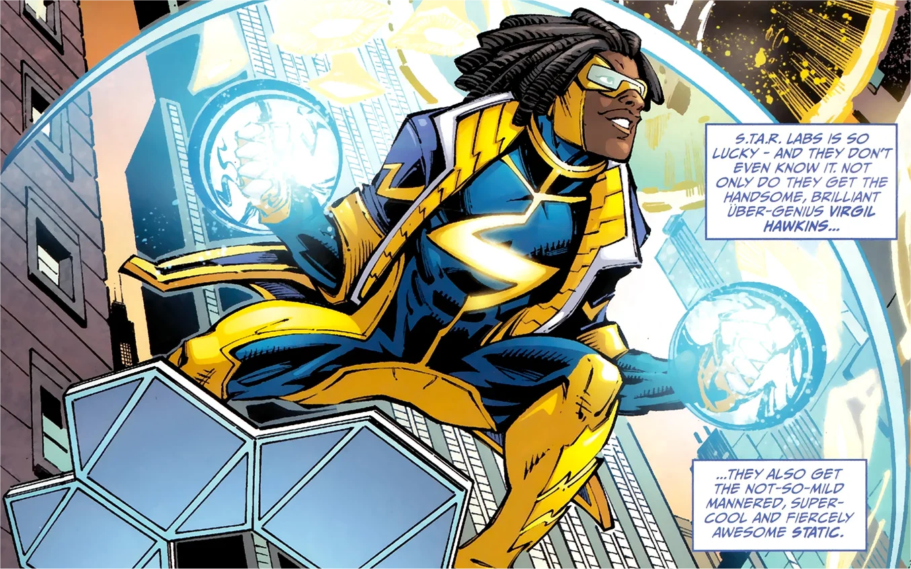

Virgil Hawkins, o melhor herói dos anos 2000
Super Shock é um super herói que tem poderes de eletrocinese, controlando energias naturais, mas principalmente a eletrica, dando paz a Dacota's city

Super Shock é um super herói que tem poderes de eletrocinese, controlando energias naturais, mas principalmente a eletrica, dando paz a Dacota's city